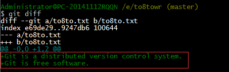

修改文件
现在，我们成功添加并且提交了to8to.txt。接下来，我们修改这个文件，内容如下：
Git is a distributed version control system.
Git is free software.
$ git status -- 查看当前仓库状态
$ git status 命令可以让我们时刻掌握仓库当前的状态，上面的命令告诉我们，to8to.txt被修改过了，但还没有准备提交的修改。
虽然$ git status 命令告诉我们to8to.txt被修改了，但如果能看看具体修改了什么内容，自然是极好的。比如你休假两周回来，第一天上班时，已经记不清上次怎么修改的to8to.txt，所以，需要用$ git diff 这个命令查看
知道对to8to.txt做了什么修改之后，就可以放心的把他提交到仓库了。
提交修改和提交新文件是一样的两步，顺便复习一下之前学过的添加和提交：
$ git add to8to.txt
$ git commit –m "add two line"
提交之后，我们再用 $ git status 看看当前的仓库状态
Git 告诉我们当前工作目录是干净的（working directory clean），没有需要提交的修改
小结：
1，$ git status 查看当前仓库状态
2，$ git diff 查看修改的具体内容